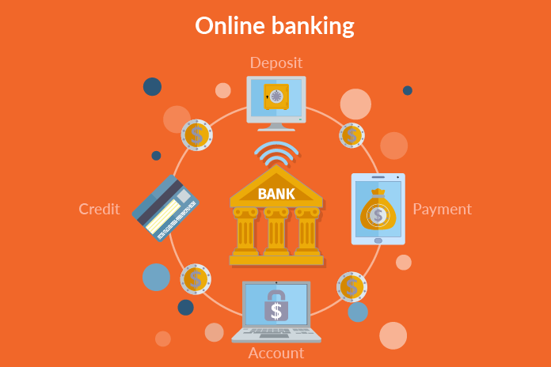
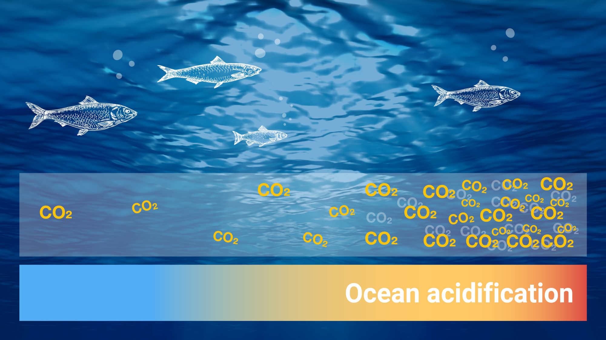

Ever wished you didn’t have to get the groceries in the freezing cold and have everything delivered to you, well this project might be the solution? I designed an autonomous delivery robot using the EV3 LEGO Mindstorms platform, programmed in RobotC, to navigate a grid and transport items seamlessly. Equipped with a gyro sensor for navigation, touch and color sensors for obstacle and object detection, and a motorized claw for item handling, the robot ensures precision and reliability. It dynamically adjusts its path using real-time calculations and provides status updates during operation. This project showcases my expertise in robotics, sensor integration, and problem-solving to bring innovative automation to life.

Welcome to GOOP Banking, a project designed to simulate an online banking system. This platform allows users to create accounts, log in securely, and manage their finances with ease.
Users can perform essential banking operations such as depositing, withdrawing, e-transferring funds, and reviewing their transaction histories. The system also includes dedicated functionalities for managing chequing and savings accounts, enabling users to transfer funds between accounts, pay bills, and calculate interest over time.
Imagine the thrill of dropping that last piece to claim victory, this is the experience I’ve recreated with my Java based implementation of the classic Connect Four game. It allows two players to take turns dropping checkers into a 6x7 grid, with the goal of connecting four checkers in a row, either horizontally, vertically, or diagonally. The game alternates between Player 1 and Player 2, who take turns choosing a column to drop their checker. The grid is represented as a 2D array, tracking where Player 1 and Player 2 have dropped their pieces. The game ensures that invalid moves are rejected, such as dropping a checker into a full column.

"Spot it!" is an engaging Java-based recreation of the classic card game, offering a variety of exciting modes for players to enjoy. The game includes Infinite, Timed, Speed, Multiplayer, and Practice modes, each providing a unique challenge. In single-player modes, players can hone their speed and accuracy by spotting matching symbols, while the multiplayer mode adds a competitive edge for friends to battle it out. The game features replay options, encouraging players to refine their skills, and break their records!

This project reads election data from CSV files, where each file contains voting information for different districts. It extracts key details like the district name, party names, vote counts, and party percentages. The program processes this data to calculate the total number of votes and the share of each party's votes. It then uses this information to simulate the election results, generating outcomes based on the input data. These results are displayed to the user and also saved to a text file named after the district, allowing for easy access and review of the simulation. The program also includes checks to ensure the data is valid, such as making sure the percentages do not exceed 100%.
This data cleaning project focuses on preparing and refining a dataset related to layoffs for further analysis. It involves several key steps to ensure the integrity and usability of the data. First, duplicates are identified and removed using SQL window functions and common table expressions (CTEs). The data is then standardized by correcting errors such as extra spaces, inconsistent terms (e.g., "crypto" and "cryptocurrency"), and fixing date formats. Null values are handled carefully, ensuring that missing or empty fields are addressed appropriately by either removing them or filling them based on available information. Finally, unnecessary rows and columns are deleted to streamline the dataset, making it more efficient for analysis.

This project analyzes ocean statistics by processing a CSV file containing data on ocean CO2 levels, ocean pH, and atmospheric CO2. The program reads each record from the file, storing the information in an organized format for further analysis. It calculates key statistics, such as the average ocean CO2, ocean pH, and atmospheric CO2 levels for the first and last ten records, offering insights into ocean health trends. The program also handles errors, ensuring that the data is properly formatted and processed. The results are displayed clearly, providing valuable information about the state of ocean acidity over time.